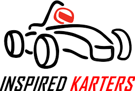
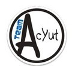
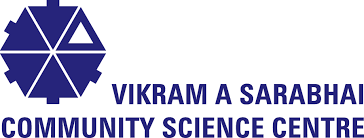

In this page, I have added my Education, Lab and Corporate Experiences, my University Courses. Later, in this page I have also mentioned my Volunteer Experience and Extra curricular Activities that I have done. My Test Scores have been listed in “Achievements “ tab.
I have done several other MOOC s ( Massive Open Online Courses ), details of which have been added in ” MOOCS” section under ” Achievements ” tab.
Education
Bachelor’s of Engineering ( Honors.) in Electronics and Instrumentation Engineering.
Birla Institute of Technology and Science (BITS) Pilani
Pilani, Rajasthan, India
August 2018 – May 2022 (expected)
Higher Secondary Education with Major in Physics, Maths, Chemistry ( PCM )
Shiv Ashish Higher Secondary School
Ahmadabad, Gujarat, India
April 2017 – May 2018
Secondary Education
Nirma Vidyavihar School
Ahmadabad, Gujarat, India
March 2015 – March 2017
Experience
AI – ML and IoT Summer Research Internship.
TECHLAB – Silvertouch Technologies Ltd.
Ahmadabad, Gujarat, India
June 2020 – August 2020
In this Internship, I worked towards developing a high accuracy Facial demographics module that can be used in Real-World situations and developing an algorithm to use it as an Song Prediction system for local Cafes/Bars. The model was custom built using a Hybrid ensamble of SVM and Random fores for age regression and Gender classification. I spent a lot of time experimenting with high level algorithms in Digital Image Processing to counter real world errors, using measures like PSNR and Noise – Contrast Trade-offs.
The model was used to develop an amalgamated active learning based model to predict the Songs based on Age and Gender features of members present in the Cafe/Bar. Iot based APIs were also developed for communicating with the MQTT controlled media player. A Web based prototype was also created using
Python based wrapper of Flask.
Embedded System Head and Senior Electronics Engineer (R&D).

Inspired Karters – Formula Students
Boiler Room, BITS Pilani…………… Campus, Pilani
November 2019 – Present
Inspired Karters – Formula Students ( IKR – FS ) is a Student led Technical team that specializes in developing Formula racing Vehicles. The team competes several other national and international Teams in a prestigious Formula student racing event called Formula Bharat. The team is completely student run and handles all the task starting from finding Sponsors to scooping vendors for various parts of the vehicle. In 2019, the team shifted to Electric Vehicle Category and I was one of the founding members.
I started off as an junior engineer in 2018 and at the time of probation, I learnt various skills from Mechanical and Manufacturing, Electronics, Electrical Power-train and Vehicle Dynamics. I finally joined the electronics sub-section, got promoted to Electronics Specialist in 2019 and am currently the responsible for designing the Control and Coordination, and Firmware for an Electric Vehicle. Along my journey, I have had a chance to simulate all the Electronics of the car including safety, control, and management (Battery) circuits using KI CAD and Multi Sim. I have also gained basic, off the track skills like CADding and Battery Module selection and Analysis
Currently, I am responsible for designing Drive Control Module and Touch Screen display using STM32 board and integrating the same in a CAN controlled network. I also developed an additional application layer protocol for tackling starvation issues. I am working with off-the shelf Kvaser Memorator (worth 1500 USD, fully funded )and extending its functionality by adding customized firmware for over the air updates. The team is also working towards integrating IMUs with inbuilt Kalman Filters and GPS for effective road data acquisition. This is used for real time fuel efficiency determination, adding an additional functionality for next year’s racing event. All other details related to this work have been given in the projects section.
Robotics Technical Training

Team AcYut – Humanoid
Center for Robotics and Intelligent Systems, Pilani, India
September 2018 – December 2018
AcYut is India’s first Humanoid Robot and was built in CRIS, BITS Pilani. Every year, the team hold competitive enrollment for freshers and I was privileged to be among top 8 – 10 students from the entire batch of 1500+ students, from 2018 batch. I even got a chance to look at Walk simulation algorithms of football playing humanoids !
As part of my training, I did a literature review on Inverse Kinematics, Fourier Transforms, Potential Field approach and Genetic Algorithms. Then, I was asked to built a USB to TTL Hardware driver from scratch. The PCB was designed on Eagle CAD. I also, partially designed the CAD design of robotic arm manipulator for a humanoid bot, having 5 DOF, on Fusion 360. As part of the programming assignment, I developed ”Chess move verifying” module for automatic chess playing bot, that was in the development phase.
School Science Forum – Advanced Scientific Training

VASCSC lab( Vikram A. Sarabhai Community Science Centre)
Ahmadabad, Gujarat, India
April 2014 – May 2016
I have done various projects at VASCSC research center in my summer vacations. This includes development of a Fully Controllable Electromagnetic Crane at the Robotics Lab, Launching of Chemical Fuel powered Rocket at the Aeronautics Lab, and development of Water Level Indicator and Automatic Night Lamp at Circuits Lab.
Courses
#Note that courses marked with asterisk(*) are ongoing courses.
Electronics and Electrical
Microprocessor Interfacing, Digital Design, Control Systems, *Transducers and Measurement Techniques, Electro-Mechanical Machines, Signals and Systems, *Analog and Digital VLSI design , Micro Electronic Devices and Circuits, Electrical Sciences and Current Electricity, *Electronic Instrumentation Technology.
Computer Science
*Artificial Intelligence and Algorithms, *Natural Language Processing, *Applied Computer Vision, *OS Programming, Computer Programming.
Mathematics
*Advanced Optimization Techniques, Probability and Statistics, Complex Algebra, Matrices and Determinants, Advance Calculus, Higher Order Differential Equations, Cryptography, Mathematical Problem Solving.
Other Relevant courses
Mechanical Oscillation and waves, Mechanical Workshop, Engineering Graphics, General Biology and Biology Laboratory, Business Communication, Technical Report Writing, Human Resource Development.
Volunteer Experience
Founding Member of Women in Engineering (WIE) section of IEEE BPSC
Was one of the Founding members of the ” Women in Engineering (WIE) ” department under IEEE Student Section at BITS Pilani.
This initiative was to accelerate the role of women in engineering and also motivate them towards innovation by providing appropriate project funds
March 2020
Volunteer for Blood Donation Camp
Volunteered for helping the team of National Service Scheme (NSS), BITS Pilani in carrying out the Blood Donation Camp (BDC) at BITS Pilani. I was responsible for distributing food packets and energy drinks to post – donars.
The event was a huge success with over 1000+ Units of blood collected.
Feb 2020
Blood Donar
Donated 1.5 Units of Blood at Blood Donation Camp, organized by Indian Red Cross Society at BITS Pilani Campus.
P.S – The certificate shows 1 unit (standard ) but, according to my BMI, I was eligible to donate 1.5 units.
Feb 2019
Friends of AMC
Active team member of ” Friends of AMC “, an NGO working closely with AMC( Ahmadabad Municipal Corporation ) to promote and facilitate the cleanliness in Ahmadabad.
March 2013 onwards
Extra Curricular Activities
# Other club activities have been listed in ” Position of Responsibilities ” section, as I hold PORs in them.

Dance
Participated in University’s Founder’s day event. I was a part of dance team that performed Western – Traditional fusion dance version of Garba.
Jan 2019, Jan 2020